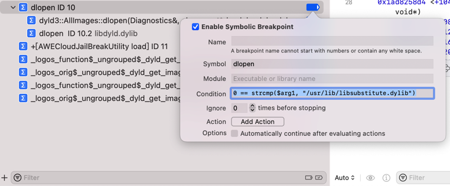
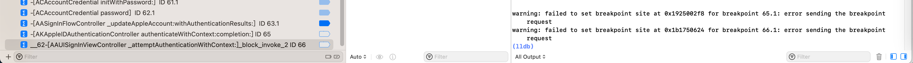
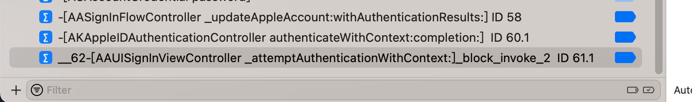

常见问题
条件判断断点
Couldn't parse conditional expression error user expression has unknown return type cast the call to its declared return type
0 == strcmp($arg1, "/usr/lib/libsubstitute.dylib")
- 问题
XCode的lldb中，加断点的条件判断：
0 == strcmp($arg1, "/usr/lib/libsubstitute.dylib")
- 
报错：
Stopped due to an error evaluating condition of breakpoint 10.2: "0 == strcmp($arg1, "/usr/lib/libsubstitute.dylib")"
Couldn't parse conditional expression:
error: <user expression 7>:1:6: 'strcmp' has unknown return type; cast the call to its declared return type
0 == strcmp($arg1, "/usr/lib/libsubstitute.dylib")
^~~~~~~~~~~~~~~~~~~~~~~~~~~~~~~~~~~~~~~~~~~~~
- 原因
此处无法识别strcmp的返回值类型size_t
注：size_t本身一般是unsigned int或unsigned long
- 解决办法
加上强制转换，为普通的int类型：
0 == (int)strcmp($arg1, "/usr/lib/libsubstitute.dylib")

判断objc_alloc_init中+44行的汇编代码中参数是否是AADeviceInfo的实例
- 写法1：
(bool)[$x0 isKindOfClass: objc_getClass("AADeviceInfo")]
之前经过lldb命令测试发现objc_getClass返回的结果类型无法识别：
(lldb) po [$x0 isKindOfClass: objc_getClass("AADeviceInfo")]
error: expression failed to parse:
warning: <user expression 25>:1:2: receiver type 'unsigned long' is not 'id' or interface pointer, consider casting it to 'id'
[$x0 isKindOfClass: objc_getClass("AADeviceInfo")]
^~~
error: <user expression 25>:1:21: 'objc_getClass' has unknown return type; cast the call to its declared return type
[$x0 isKindOfClass: objc_getClass("AADeviceInfo")]
所以最后要改为：
(bool)[$x0 isKindOfClass: (Class)objc_getClass("AADeviceInfo")]
才至少确保语法上是正确的（至少po可以正常解析执行）
(lldb) po [$x0 isKindOfClass: (Class)objc_getClass("AADeviceInfo")]
nil
- 写法2：
[$x0 isKindOfClass: (Class)objc_getClass("AADeviceInfo")]
表达式最前面没有加上bool强制转换，所以Xcode无法识别（是条件判断类型的语句）
- 写法3：
(bool)[NSStringFromClass($x0) isEqualToString: @"AADeviceInfo"]- 此处已经是
AADeviceInfo的Instance，而不是Class，所以不能用NSStringFromClass- 因为函数定义是：
NSString * NSStringFromClass(Class aClass);
NSStringFromClass的参数，应该是Class，而非Instance
- 因为函数定义是：
- 详见：
- 【已解决】iOS的ObjC中如何获取Class类名
- 此处已经是
iOS的ObjC相关
WARNING: Unable to resolve breakpoint to any actual locations
- 问题
lldb中给ObjC函数加断点：
br s -n "-[NSMutableURLRequest setValue:forHTTPHeaderField:]"
报错：WARNING: Unable to resolve breakpoint to any actual locations.
- 直接原因
当前被调试的二进制中，的确没有这个类的函数，可供加断点，所以报错。
- 深层次原因
此处的被lldb调试的对象，iOS的app：Preferences（或者是此刻iOS中系统的库），是没有包含调试的信息的，或者是经过特殊处理了，去掉了可以调试的信息
导致此处ObjC的类的函数：
-[NSMutableURLRequest setValue:forHTTPHeaderField:]
内部找不到，所以就加不上断点。
- 解决办法：没法解决
- 规避办法
此处特殊的，可以去找：其他的，个别的，继承了该类的函数，去加断点
比如：
image lookup -rn "setValue:forHTTPHeaderField:"
找到的部分类，有此函数，所以可以去加断点：
br s -n "-[SSMutableURLRequestProperties setValue:forHTTPHeaderField:]"
其他
warning: failed to set breakpoint site at 0x1b1750624 for breakpoint 66.1: error sending the breakpoint request
- 问题
Xcode中加断点时报错：
warning: failed to set breakpoint site at 0x1b1750624 for breakpoint 66.1: error sending the breakpoint request

- 原因：调试环境被破坏了
- 细节：之前Mac中，正常用Xcode调试USB连接的iPhone设备中的内容，但是后来，关闭了Mac屏幕，内部应该就是去休眠了
- 所以会导致Mac中和iPhone中部分程序已休眠，或者是停止运行，断开连接等异常情况
- 所以即使重新打开Mac屏幕，重新继续去Xcode中去调试，此时环境也不对了，被破坏了，所以会出现各种异常情况
- 细节：之前Mac中，正常用Xcode调试USB连接的iPhone设备中的内容，但是后来，关闭了Mac屏幕，内部应该就是去休眠了
- 解决办法
- 重新用Mac连接iPhone，加上Xcode去，重新启动调试环境，即可正常继续调试：添加断点等等
- 
- 重新用Mac连接iPhone，加上Xcode去，重新启动调试环境，即可正常继续调试：添加断点等等